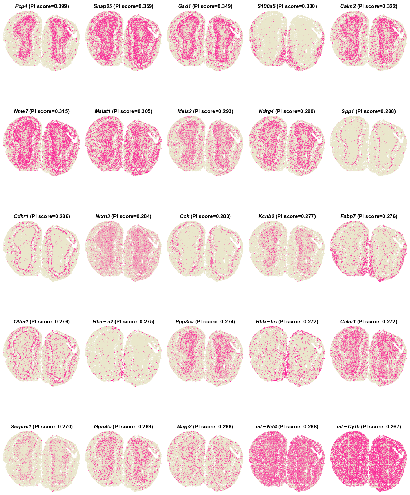
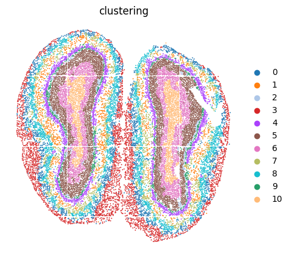
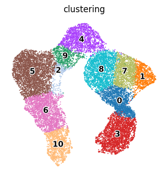

Stereo-seq Analysis
In this vignette, we analysis an ST dataset with cellular resolution (~14 μm in diameter per spot) generated by the Stereo-seq platform from mouse olfactory bulb tissue (add citation) to evaluate the performance of PROST on ST datasets with single-cell resolution.
Identify SVGs
1.Load PROST and its dependent packages
import pandas as pd
import numpy as np
import scanpy as sc
import os
import warnings
warnings.filterwarnings("ignore")
import matplotlib.pyplot as plt
import matplotlib as mpl
import sys
import PROST
PROST.__version__
>>> ' 1.1.2 '
2.Set up the working environment and import data
# the location of R (used for the mclust clustering)
ENVpath = "your path of PROST_ENV" # refer to 'How to use PROST' section
os.environ['R_HOME'] = f'{ENVpath}/lib/R'
os.environ['R_USER'] = f'{ENVpath}/lib/python3.7/site-packages/rpy2'
# init
SEED = 818
PROST.setup_seed(SEED)
# Set directory (If you want to use additional data, please change the file path)
rootdir = 'datasets/Stereo-seq/'
input_dir = os.path.join(rootdir)
output_dir = os.path.join(rootdir, 'results/')
if not os.path.isdir(output_dir):
os.makedirs(output_dir)
# Read data from input_dir
adata=sc.read(input_dir+"/used_data.h5")
3.Calculate and save PI
adata = PROST.prepare_for_PI(adata, percentage = 0.01, platform="stereo-seq")
adata = PROST.cal_prost_index(adata, connect_kernel_size=6, neighbors=8, platform="stereo-seq")
adata.write_h5ad(output_dir+"/PI_result.h5")
>>> Filtering genes ...
>>> Trying to set attribute `.var` of view, copying.
>>> Normalization to each gene:
>>> 100%|██████████| 8520/8520 [00:02<00:00, 2871.91it/s]
>>> Gaussian filtering for each gene:
>>> 100%|██████████| 8520/8520 [18:07<00:00, 7.83it/s]
>>> Binary segmentation for each gene:
>>> 100%|██████████| 8520/8520 [00:29<00:00, 285.26it/s]
>>> Spliting subregions for each gene:
>>> 100%|██████████| 8520/8520 [01:39<00:00, 85.66it/s]
>>> Computing PROST Index for each gene:
>>> 100%|██████████| 8520/8520 [18:21<00:00, 7.74it/s]
>>> PROST Index calculation completed !!
4.Draw SVGs detected by PI
PROST.plot_gene(adata, platform="stereo-seq", size = 0.3, top_n = 25, ncols_each_sheet = 5, nrows_each_sheet = 5,save_path = output_dir)
>>> Drawing pictures:
>>> 100%|██████████| 1/1 [00:15<00:00, 15.58s/it]
>>> Drawing completed !!

Clustering
# Set the number of clusters
n_clusters = 11
1.Read PI result and Expression data preprocessing
PROST.setup_seed(SEED)
adata = sc.read(output_dir+"/PI_result.h5")
sc.pp.normalize_total(adata)
sc.pp.log1p(adata)
adata = PROST.feature_selection(adata, save_path = output_dir, by = "prost", n_top_genes = 3000)
adata
>>> View of AnnData object with n_obs × n_vars = 19109 × 2527
obs: 'n_genes_by_counts', 'log1p_n_genes_by_counts', 'total_counts', 'log1p_total_counts', 'pct_counts_in_top_50_genes', 'pct_counts_in_top_100_genes', 'pct_counts_in_top_200_genes', 'pct_counts_in_top_500_genes'
var: 'n_cells_by_counts', 'mean_counts', 'log1p_mean_counts', 'pct_dropout_by_counts', 'total_counts', 'log1p_total_counts', 'n_cells', 'SEP', 'SIG', 'PI', 'selected'
uns: 'binary_image', 'del_index', 'gau_fea', 'locates', 'nor_counts', 'shape', 'subregions', 'log1p'
obsm: 'spatial'
2.Run PROST clustering
PROST.run_prost_clust(adata,
platform="stereo-seq",
min_distance = 50,
init="mclust",
n_clusters = n_clusters,
tol = 5e-3,
laplacin_filter = True,
SEED=SEED,
max_epochs = 500,
post_processing = False)
>>> Calculating adjacency matrix ...
>>> Running PCA ...
>>> Laplacian Smoothing ...
>>> Initializing cluster centers with mclust, n_clusters known
>>> Epoch: : 501it [3:07:58, 22.51s/it, loss=0. 24661717]
>>> Clustering completed !!
3.Save result
adata.write_h5ad(output_dir + "/PNN_result.h5")
clustering = adata.obs["clustering"]
clustering.to_csv(output_dir + "/clusters.csv",header = False)
4.Plot clustering results
color_list = ['#1f77b4', '#ff7f0e', '#aec7e8', '#d62728', '#aa40fc', '#8c564b',
'#e377c2', '#b5bd61', '#17becf', '#279e68', '#ffbb78']
adata.uns["clustering"+"_colors"] = color_list
plt.rcParams["figure.figsize"] = (5,5)
sc.pl.embedding(adata, basis="spatial", color="clustering",size = 7,s=6, show=False, title='clustering')
plt.axis('off')
plt.savefig(output_dir+"/clustering.png", dpi=600, bbox_inches='tight')

5.Plot UMAP
Next, the embeddings generated by PROST was applied to UMAP for visualization.
plt.rcParams["figure.figsize"] = (4,4)
sc.pp.neighbors(adata, use_rep="PROST")
sc.tl.umap(adata)
ax = sc.pl.umap(adata, color="clustering", frameon=False, size=8,
show = False,legend_loc='on data',legend_fontoutline=2,legend_fontsize=11,
)
plt.axis('off')
plt.subplots_adjust()
plt.savefig(output_dir+"/umap.png", dpi=600,bbox_inches='tight')
